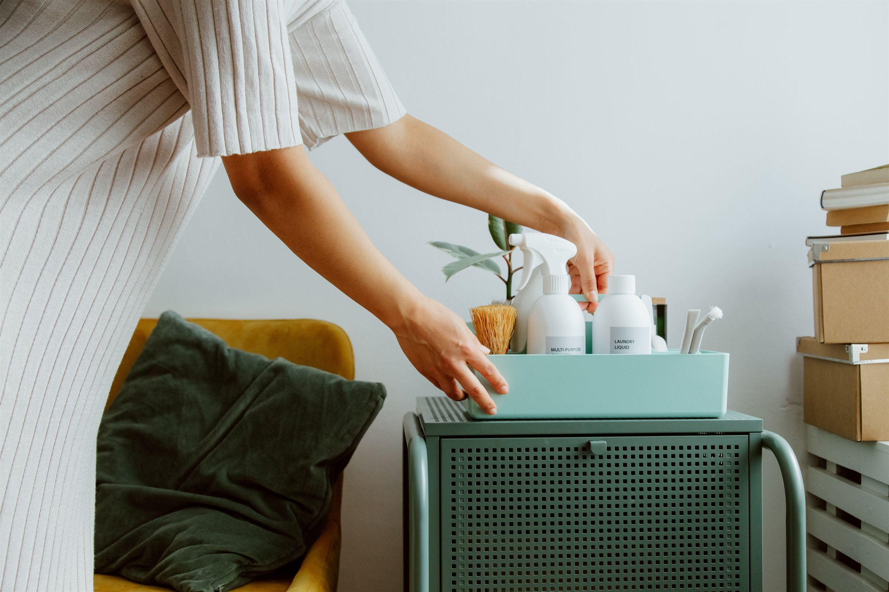
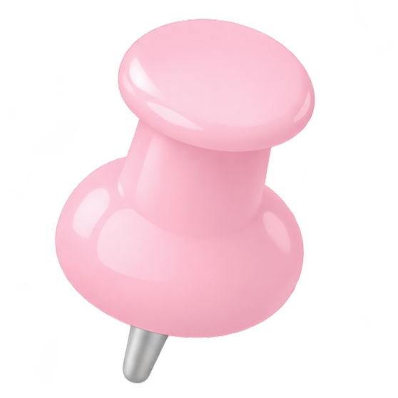
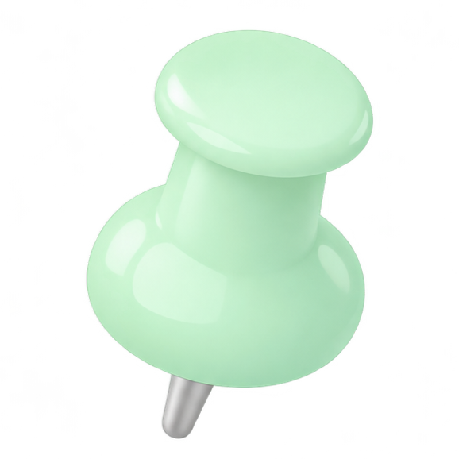

問卷與深度訪談，找出「知道要買，卻在買到之前中斷」
補補
從發現需求，到真正完成。
補補是一款居家消耗品補貨管理 App，協助使用者記下補貨需求、整理待買用品，並透過共享空間與購買紀錄，讓需求從發現延續到完成。
我的角色UI/UX 設計與前端開發
專案類別UX 案例研究居家補貨 App
我的貢獻
從功能規劃，到決策紀錄。
主要負責用品管理、補貨提醒與補貨紀錄相關功能的規劃及實作，包含用品列表與篩選、狀態規則、新增用品、補貨明細及記錄補貨流程。同時負責專案規格整理與設計決策紀錄，協助維持功能與開發方向的一致性。
7 人可用性測試，依結果修正三項主要問題
手機尺寸前端原型，含補貨、購買清單與共享認領流程
先寫規格、記錄每項設計決策，公開於 GitHub
問題
補貨需求很容易察覺，也很容易忘記。
生活用品的補貨需求，經常出現在不方便立即購買的時刻。當需求沒有被妥善保留，使用者就需要依靠記憶或反覆確認用品狀態，增加日常管理負擔。對於多人生活空間，也需要考慮如何讓補貨需求被共享、認領與完成。

察覺需求只是第一步。
我用問卷與深度訪談了解補貨的真實情境，並比較 3 款競品與 LINE。問題不只是用品快用完，而是知道要買的需求，常在真正買到之前中斷。
47份
問卷回覆
2026/9/18–9/19，社群平台招募
6位
深度訪談（A～F）
2026/9/16–9/20，匿名呈現
4項
研究發現
三組主題：發現到買到、記錄負擔、多人交接
發現得太晚
曾在用品用完或快用完時才發現需要補充；是否急迫仍取決於備品、替代方案與生活情境。
問卷 35/47 · 訪談 A · B · C · D
買到之前就忘了
曾知道要買卻忘記；用備忘錄或手機提醒的 18 人中，仍有 13 人曾忘記。
問卷 32/47 · 訪談 A · C · F
記錄很費力
想記錄卻覺得麻煩；常見做法多不建檔：腦中記 28/47、口頭交代 14/47。
問卷 8/47 · 訪談 B · F
交接不清楚
共居 37 人中 6 人曾以為別人會買，或不確定別人買了沒；問題多出在責任交接。
問卷 6/37 · 訪談 A · D · F
重點結論
補補優先處理「知道要買，卻在買到之前中斷」的需求，而不只是提醒用品快用完。
因此，補補以「先記下需求、適合購買時重新看見、買完留下紀錄」為主線，並在多人採買情境中提供認領與完成狀態。
來源：提案 V2 · 02 使用者分析。樣本為本次問卷與訪談，不代表所有使用者比例。
讓每個補貨需求都能往前走。
降低記錄補貨需求的操作負擔，讓使用者即使無法立即購買，也能保留需求，並在之後順利完成。
記下需求，而非盤點庫存
以補貨紀錄推算預計補貨日，不要求使用者逐一維護剩餘數量。
完整庫存盤點與複雜消耗推估
以降低記錄與維護負擔為優先，不列為主要流程。
四個設計原則
記下需求
快速記下需要補貨的用品。
持續可見
讓尚未完成的需求持續可見。
支援共同決策
在共享空間中整理多人需求，減少重複確認。
完成閉環
透過記錄補貨，讓需求具有明確完成狀態。
以上為設計原則與功能取捨，不代表所有功能已完成開發；目前尚未據此宣稱使用成效。
讓補貨需求持續前進的四個時刻。
以下皆使用補補實際 App 畫面（網頁版前端實作截圖），依序展示從察覺需求到完成補貨的四個關鍵時刻。
1察覺需求
當用品接近補貨時機，讓使用者更容易察覺需求。
畫面重點：用品列表以「該補貨了」標示接近補貨時機的用品。目前是 App 內標示，尚未實作主動推播通知。
細節放大
2先保存，之後再買
即使當下不方便購買，也能先保存需求。

畫面重點：用品加入購買清單後可調整待買數量；個人清單的項目可延後提醒，下次提醒日期最早為明天。
細節放大
3共同採買
讓多人生活空間中的補貨需求，可以被共同查看與處理。
畫面重點：共享清單分為「待認領」與「已認領」，並標示認領者，也可一次認領全部待認領項目。目前以單一裝置模擬成員，尚未連接後端與即時同步。
細節放大
4完成閉環
完成購買後留下紀錄，讓補貨需求形成完整閉環。

畫面重點：「記錄補貨」可選擇用品與日期（預設今天）；補貨明細會累積補貨紀錄，作為預計補貨日的推算依據。
細節放大
測試讓我們看見流程在哪裡斷掉。
7位
受測者
2026/10，手機尺寸網頁版，邊做邊說
8個
情境任務
4 個核心、4 個次要
3.79
平均滿意度（滿分 5）
範圍 2.5–5.0
案例 01 / 記錄負擔
別叫使用者預測，讓系統來算。
3/7位不知道怎麼填
看到什麼
新增用品時，「下次補貨時間」讓人卡住。
「不會想說一條牙膏會用多久。」P5
改了什麼
不用填。記錄兩次補貨後，由系統自動推算。
決策紀錄 UT-13 · UT-25 · UT-26
案例 02 / 可發現性
讓「空間」一眼找得到。
7/7位找不到入口
看到什麼
「新增空間」藏在設定頁深處，是唯一所有人都卡關的任務。
「看不到任何地方有『空間』這兩個字。」P3
改了什麼
放進底部「＋」選單；空間選擇也改成看得出可以點的膠囊。
決策紀錄 UT-02 · UT-24 · UT-30 · UT-33
案例 03 / 回饋
讓人確認剛剛發生了什麼。
3/7位不確定有沒有成功
看到什麼
按下「記錄補貨」後，成功提示消失得太快。
「這樣是有成功了嗎？」P4
改了什麼
提示延長到 8 秒，觸碰時暫停倒數，並附上「復原」。
決策紀錄 UT-10 · UT-33
來源：可用性測試逐字稿與任務分析；改版前畫面取自測試當時的版本。樣本僅 7 人，數字為方向參考；修正後尚未重新測試，不據此宣稱使用成效。
在有限時間內，決定做什麼、不做什麼。
接近繳交期限時，我比較每個選項的成本與價值，並把理由寫進決策紀錄。以下三個決策，都來自測試之後的修正。
決策 01 / 範圍取捨
不做「暫時不用補貨」
決策紀錄 UT-36
為什麼
這個功能讓用品延後 7 天再提醒，原本只有首頁選單有入口，首頁移除後就沒有入口；App 沒有推播，誤報只是一個標記，代價低；而且要改動多份規格，成本高於價值。
取捨
放棄這個功能，列為未來展望；使用者仍可關閉該用品的提醒，或記錄補貨後讓系統重算。購買清單裡的「延後提醒」則保留。
決策 02 / 重新評估
批次選取：先延後，再納入
決策紀錄 UT-32 · UT-43
為什麼
一開始工作量太大而延後；重新評估後，只做最有價值的「批次加入購買清單」，批次刪除與批次記錄補貨仍不做。
取捨
長按進入選取模式不容易被發現；之後視測試結果再決定是否補上入口。
決策 03 / 用詞
把「認購」改成「認領」
決策紀錄 UT-41
為什麼
3/7 位測試者覺得「認購」不直覺，有人以為已經買了。比較幾種說法後，我們選了只換一個字、又和「已購買」分得開的「認領」。
取捨
「我來買」更口語，但要重做標籤與按鈕文案，時間來不及；所以只換用詞，不改流程。
親自體驗看看。
補補已完成手機尺寸的前端補貨流程（網頁版）。它是以 Vue 3 與 Vite 實作的前端原型，並非原生 App；資料保存在瀏覽器 localStorage，沒有後端，共享情境以單一裝置模擬成員。
我學到的事。
產品思考
將「發現需要補貨，卻無法立刻購買」的生活情境，轉化為明確的產品需求：先留下需求，再讓它在適合的時機被看見並完成。
協作與取捨
兩人合作需要先對齊規格與功能邊界，並在時程內取捨範圍；例如以補貨紀錄推算預計補貨日，而不追蹤完整庫存。
後續步驟
已完成 7 人可用性測試，並依結果修正主要問題。下一步是針對修正後的版本複測，確認使用者是否願意持續記錄、共享認領流程是否清楚，並評估為第一次使用的人加入新手引導。
TROVA 智慧旅行規劃平台
讓旅程規劃從分散的資訊與繁瑣的比較，變成更清楚的決策流程。